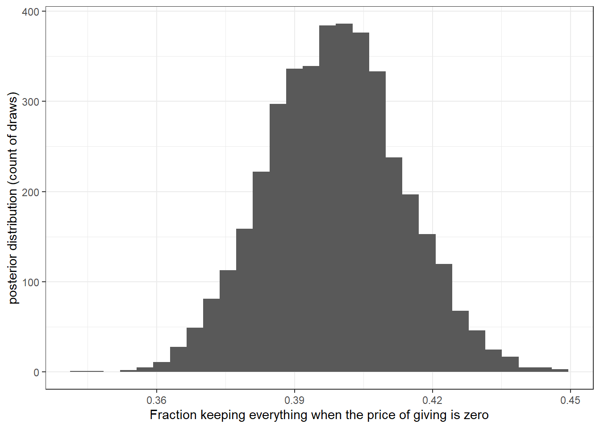

2 Getting started in Stan
2.1 Installation in R
Here I am going to defer to people who have thought more about the process of installing the RStan library in R. Go here: https://github.com/stan-dev/rstan/wiki/RStan-Getting-Started.
At the time of writing (2023-0.1-27), you have the choice of installing the latest development version (2.26.x), or the latest released version (2.21.1, July 2020). I use the development version, as it has the capability of within-chain parallelization, which may speed things up if you have enough cores. I will strive to write code that does not rely on the development version, unless I am explicitly showing you how to parallelize something.
2.2 The anatomy of a Stan program
In this section, I will walk you through the different components of a Stan program. Stan takes instructions from you in an organized way, based on which part of the model you are describing:
- In the data block, you provide a description of the data
- In the parameters block, you list the parameters in the model
- In the model block, you describe how the data and parameters are combined to compute the likelihood. You also declare the priors in the model block
There is also the option to have the following blocks of code in a Stan program, although it is not necessary:
- In the functions block, you declare any user-defined functions
- In the transformed data block, you can transform data
- In the transformed parameters block, you can generate variables that are transformations of your parameters and data. As these transformed parameters are assumed to be needed in the model block, Stan has to compute derivatives with respect to these parameters.
- In the generated quantities block, you can ask Stan to compute anything using the simulated parameters from the posterior and the data. As these quantities do not show up in the model block, Stan does not need to compute derivatives of these.
As an example, I will walk you through writing a Stan program for analyzing data from Andreoni and Vesterlund (2001). You can load the data like this:
library(tidyverse)
AV2001choices<-read.csv("Data/AV2001choices.csv")
AV2001parameters<-read.csv("Data/AV2001parameters.csv")In this experiment, participants were asked to allocate tokens between themselves and another participant. These tokens were then converted to cash at different rates. You can see how these budget sets were constructed using the AV2001parameters dataset:
AV2001parameters %>% knitr::kable()| X | income | pSelf | pOther |
|---|---|---|---|
| 1 | 40 | 3 | 1 |
| 2 | 40 | 1 | 3 |
| 3 | 60 | 2 | 1 |
| 4 | 60 | 1 | 2 |
| 5 | 75 | 2 | 1 |
| 6 | 75 | 1 | 2 |
| 7 | 60 | 1 | 1 |
| 8 | 100 | 1 | 1 |
where income is the number of tokens to be allocated, and pSelf and pOther are the price of converting a token into one experimental currency unit for oneself and the other participant, respectively. The other part of the dataset includes the choices made by participants:
AV2001choices %>% head() %>% knitr::kable()| X | female | keep1 | keep2 | keep3 | keep4 | keep5 | keep6 | keep7 | keep8 |
|---|---|---|---|---|---|---|---|---|---|
| 1 | 0 | 10 | 30 | 20 | 40 | 25 | 50 | 30 | 50 |
| 2 | 0 | 40 | 40 | 60 | 60 | 75 | 75 | 60 | 100 |
| 3 | 1 | 40 | 35 | 60 | 50 | 45 | 75 | 50 | 100 |
| 4 | 0 | 40 | 30 | 50 | 35 | 45 | 50 | 50 | 50 |
| 5 | 1 | 20 | 30 | 40 | 45 | 50 | 55 | 40 | 75 |
| 6 | 0 | 38 | 39 | 58 | 59 | 74 | 73 | 59 | 98 |
where keep1 is the number of tokens kept by the participant in the first budget set, keep2 for the second budget set, and so on. Each row corresponds to a participant. For example, the first participant in their first decision decided to keep 10 tokens. This means that they would have earned \(10/3\) experimental currency units for themself, and \((40-10)/1\) experimental currency units for the other participant.
For this example, suppose that we would like to estimate how the price of giving, \(p^\mathrm{Other}/p^\mathrm{Self}\),2 affects whether the participant passes nothing to the other person at all. Specifically, let’s estimate the logit model:
\[ \text{kept everything}\ \mid\ \frac{p^\mathrm{Other}}{p^\mathrm{Self}}\sim \mathrm{Bernoulli}\left(\Lambda\left(\alpha+\beta \frac{p^\mathrm{Other}}{p^\mathrm{Self}}\right)\right) \]
where \(\Lambda(x)=1/(1+\exp(-x))\) is the inverse logit transformation. That is, we wish to estimate the parameters \(\alpha\) and \(\beta\). We will use the following priors for the model’s parameters, \(\alpha\) and \(\beta\):
\[ \begin{aligned} \alpha&\sim N(0,0.25^2)\\ \beta&\sim N(0,0.25^2) \end{aligned} \]
Also, since this is a nonlinear model, let’s also calculate a prediction of the probability that somebody will keep everything when the price of giving is one:
\[ \Pr\left(\text{kept anything}\ \mid\ \frac{p^\mathrm{Other}}{p^\mathrm{Self}}=1\right)=\Lambda(\alpha+\beta) \]
2.2.1 Data block
First, we will provide a set of instructions for Stan to parse the data. In RStan, we first put our data into a named list format. This list must include not only the data, but also some information about the size of some variables we are passing Stan. We can also pass any other values, like our priors, into the data block. Here is what I came up with:
dStan<-list(
# Information from the parameters data file
income = AV2001parameters$income,
pSelf = AV2001parameters$pSelf,
pOther = AV2001parameters$pOther,
# number of choices made by each participant
nChoices = AV2001parameters$pOther |> length(),
# information from the choices data file
female = AV2001choices$female,
keep = AV2001choices %>% select(keep1:keep8) |> as.matrix(),
n = AV2001choices$female %>% length(),
# Specify the priors
prior_alpha = c(0,0.25),
prior_beta = c(0,0.25)
)Here are the instructions for Stan to read in these data:
data {
int n; // number of participants
int nChoices; // number of choices per participant
vector[nChoices] income;
vector[nChoices] pSelf;
vector[nChoices] pOther;
vector[n] female;
matrix[n,nChoices] keep;
real prior_alpha[2];
real prior_beta[2];
}Note that we need to give Stan a lot of information about our data. Specifically, we need to declare the type of each variable. When we pass our list of data to Stan, it will then check that the variable we have passed to Stan matches the type that it is expecting to see. For example, here is an error I generated while writing this program that told me that it expected the variable female to be a vector with 8 elements, when in fact it received a vector of 142 elements. This was an error in my Stan file: I had mistakenly written vector[nChoices] female; instead of vector[n] female;.
Error in new_CppObject_xp(fields$.module, fields$.pointer, ...) :
Exception: mismatch in dimension declared and found in context; processing stage=data initialization; variable name=female; position=0; dims declared=(8); dims found=(142) (in 'string', line 10, column 2 to column 26)Here is another error it gave me, when I had forgotton to add the prior variables to the list of data:
Error in new_CppObject_xp(fields$.module, fields$.pointer, ...) :
Exception: variable does not exist; processing stage=data initialization; variable name=prior_alpha; base type=double (in 'string', line 13, column 2 to column 22)As with other programming languages, it is useful to get to know how to read error messages, and I will attempt to show some of the common ones to you as we work our way through some examples.
2.2.2 Transformed data block
In the transformed data block, we can apply any function we like to the data we have loaded in the data block. For this application, note that we will need to transform our choice variable kept into our binary dependent variable, which I called keptEverything. I also took the vectors pSelf and pOther and generated the explanatory variable priceOfGiving. Here is how I did this in Stan:
transformed data {
int keptEverything[n,nChoices];
vector[nChoices] priceOfGiving;
// generated a data variable equal to the price of giving
// note that the . in ./ indicates an element-by-element operation
priceOfGiving = pOther ./ pSelf;
// Generate a data variable equal one if the participant kept everything
// and zero otherwise
matrix[n,nChoices] fractionKept;
for (ii in 1:n) {
for (cc in 1:nChoices) {
if (keep[ii,cc]==income[cc]) {
keptEverything[ii,cc] = 1;
} else {
keptEverything[ii,cc] = 0;
}
}
}
}For those of you familiar with programming languages that permit matrix representations, you may be cringing at this point because of my double for loop. Yes, this will slow things down a bit compared to a matrix representation (as I did with calculating the price of giving), but I do this only to make the program easier to read. We will get to vectorizing operations soon enough. Either way, as this is the data block, so it will only execute once. You should worry more about for loops in blocks that include parameters, as these will execute thousands of times to simulate the posterior.
2.2.3 Parameters block
Next, we come to the parameters block. In this block of code, we list our model’s parameters. Like the data block, we need to tell Stan the type of variable that our parameters are. Unlike the data block, though, these must all be continuous variables. Hence, you can a parameter as a real, vector, matrix, and so on, but you cannot have an int parameter.
parameters {
// tell Stan what our parameters are
real alpha;
real beta;
}2.2.4 Model block
This is where the guts of your model goes. Here you are going to tell Stan how to compute the likelihood, and also what your priors are. Fortunately for us, Stan has a whole lot of in-built probability distributions, so we can take advantage of these to make our code more readable. They are also faster to evaluate in some cases.
model {
/*
Increment the likelihood
*/
for (ii in 1:n) {
for (cc in 1:nChoices) {
keptEverything[ii,cc] ~ bernoulli_logit(alpha+beta*priceOfGiving[cc]);
}
}
// specify the priors
alpha ~ normal(prior_alpha[1],prior_alpha[2]);
beta ~ normal(prior_beta[1],prior_beta[2]);
}Note here that we are coding our model in almost exactly the same way as we stated it mathematically. In the first part of the block (the nasty double for loop that I will get rid of in later examples), we specify the distribution of our data keptEverything, and then below this (it doesn’t really matter in which order we do this) we state the prior.
2.2.5 Generated quantities block
Finally, we can generate the prediction for the probability of keeping everything. This is done in a similar way to the generated data block, but Stan stores these values in the simulation output.
generated quantities {
// prediction when the price of giving is one
real predictionPrice1;
predictionPrice1 = 1.0/(1.0+exp(-(alpha+beta)));
}2.2.6 The final product
Putting everything together, this is what we have:
// GettingStartedAV2001.stan
data {
int n; // number of participants
int nChoices; // number of choices per participant
vector[nChoices] income;
vector[nChoices] pSelf;
vector[nChoices] pOther;
vector[n] female;
matrix[n,nChoices] keep;
real prior_alpha[2];
real prior_beta[2];
}
transformed data {
int keptEverything[n,nChoices];
vector[nChoices] priceOfGiving;
// generated a data variable equal to the price of giving
// note that the . in ./ indicates an element-by-element operation
priceOfGiving = pOther ./ pSelf;
// Generate a data variable equal one if the participant kept everything
// and zero otherwise
matrix[n,nChoices] fractionKept;
for (ii in 1:n) {
for (cc in 1:nChoices) {
if (keep[ii,cc]==income[cc]) {
keptEverything[ii,cc] = 1;
} else {
keptEverything[ii,cc] = 0;
}
}
}
}
parameters {
// tell Stan what our parameters are
real alpha;
real beta;
}
model {
/*
Increment the likelihood
*/
for (ii in 1:n) {
for (cc in 1:nChoices) {
keptEverything[ii,cc] ~ bernoulli_logit(alpha+beta*priceOfGiving[cc]);
}
}
// specify the priors
alpha ~ normal(prior_alpha[1],prior_alpha[2]);
beta ~ normal(prior_beta[1],prior_beta[2]);
}
generated quantities {
// prediction when the price of giving is one
real predictionPrice1;
predictionPrice1 = 1.0/(1.0+exp(-(alpha+beta)));
}Note that the blocks have to appear in a particular order, otherwise Stan will throw an error. The other optional blocks not used in this example are the transformed parameters block, where we can store intermediate values that are used later for calculating the likelihood, and the functions block, where we can write our own user-generated functions. I will introduce these in more detail later.
2.3 Estimating a model
Once we have our Stan program, we can go back to R and estimate the thing. You do this by first loading the rstan library. I then set a couple of options. Here the mc.cores option tells Stan to use all the cores in my processor. As we are running more than one Monte Carlo chain, this will speed things up by almost a factor of the number of cores. I then select the auto_write option, which means that the compiled Stan file will be saved. If I use it again without editing it, we will not have to waste time compiling the model again.
library(rstan)
rstan_options(auto_write = TRUE)
options(mc.cores = parallel::detectCores())
# This if statement checks to see if I have already estimated this model, and
# only runs the program if the saved results are not there
if (!file.exists("Outputs/GettingStarted/GettingStartedAV2001.rds")) {
Fit<-stan("Code/GettingStarted/GettingStartedAV2001.stan",
data=dStan,seed=42)
# Save the fitted model results
saveRDS(Fit,file = "Outputs/GettingStarted/GettingStartedAV2001.rds")
}
# load the fitted model results
Fit<-readRDS("Outputs/GettingStarted/GettingStartedAV2001.rds")2.4 Looking at the results
There are a few things we can do now that we have estimated our model. To begin with, we can get a summary table of the parameters and generated quantities like this:
summary(Fit)$summary %>% knitr::kable()| mean | se_mean | sd | 2.5% | 25% | 50% | 75% | 97.5% | n_eff | Rhat | |
|---|---|---|---|---|---|---|---|---|---|---|
| alpha | 0.0480923 | 0.0025922 | 0.0961676 | -0.1442309 | -0.0160319 | 0.0496628 | 0.1111312 | 0.2317288 | 1376.334 | 1.003172 |
| beta | -0.4592476 | 0.0017745 | 0.0670033 | -0.5930898 | -0.5040354 | -0.4585798 | -0.4149885 | -0.3262137 | 1425.779 | 1.003456 |
| predictionPrice1 | 0.3987266 | 0.0002827 | 0.0147165 | 0.3702469 | 0.3885788 | 0.3987644 | 0.4083643 | 0.4281109 | 2710.380 | 1.001968 |
| lp__ | -729.5571665 | 0.0257897 | 0.9609770 | -732.0547891 | -729.9745210 | -729.2676189 | -728.8477195 | -728.5925366 | 1388.465 | 1.002674 |
In particular, note the negative coefficient on \(\beta\). We can interpret this as participants being less likely to give anything as the cost of giving increases. Good, that checks out.
Furthermore, we can access the draws from the posterior distribution using the extract function:
draws <-extract(Fit)
(
ggplot(data=tibble(prediction = draws$predictionPrice1),aes(x=prediction))
+geom_histogram()
+theme_bw()
+xlab("Fraction keeping everything when the price of giving is zero")
+ylab("posterior distribution (count of draws)")
)
References
That is, if I want the other participant to have one more experimental currency unit, I must pass them \(p^\mathrm{Other}\) tokens, which means I have to give up \(p^\mathrm{Other}/p^\mathrm{Self}\) experimental currency units for myself.↩︎